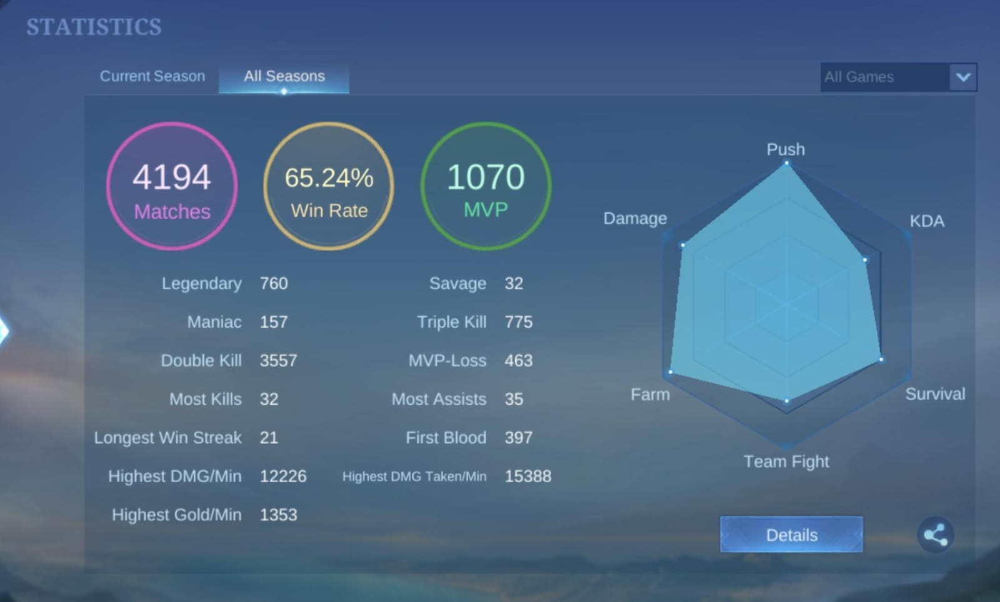
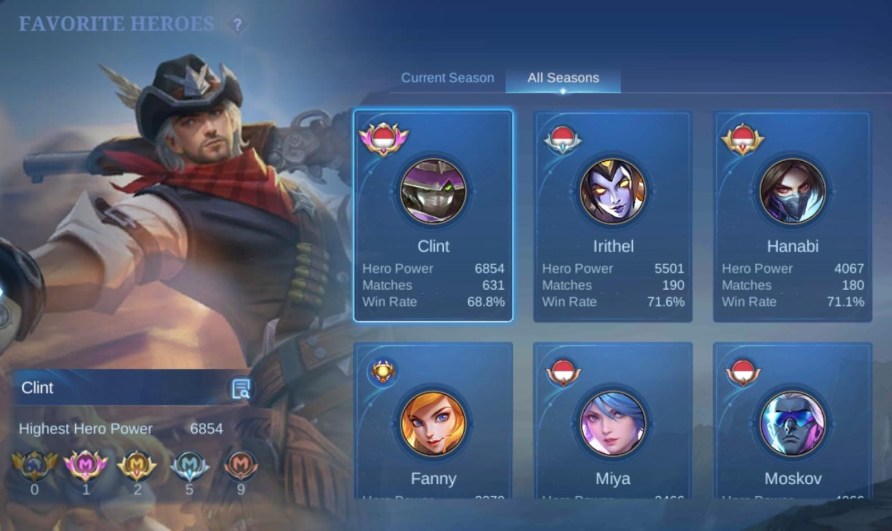
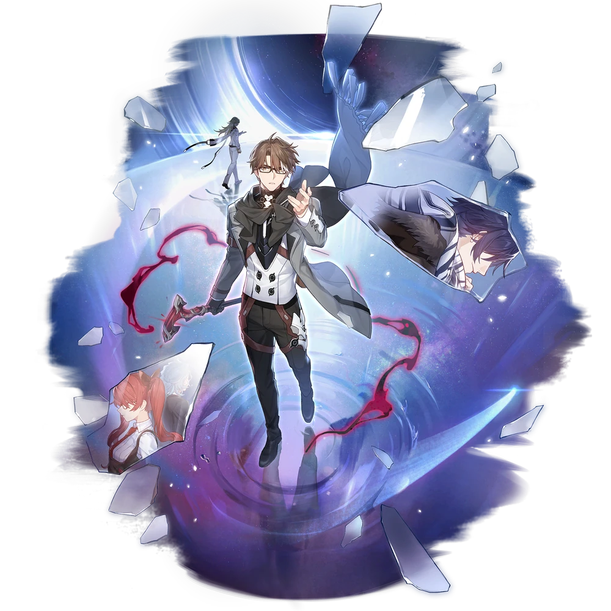

First, I play a mobile game called Mobile Legend: Bang Bang. This is a MOBA game that makes a battle about 5vs5.
Mobile Legends: Bang Bang (MLBB) is a mobile multiplayer online battle arena (MOBA) game developed and published by Chinese developer Moonton, a subsidiary of ByteDance. The game was released in 2016 and grew in popularity, most prominently in Southeast Asia.[4]
At its base gameplay, the game puts 2 teams of 5 against each other in real time with at least 20-60 second matchmaking and 10-30 minute matches. Featuring traditional battle arena gameplay, players must fight over three lanes to take the enemy's tower and defend their own while securing objectives in order to pressure the opposing team. Like classic MOBAs, there is no hero training to level up or pay to play angle—winners and losers are decided based on skill, ability, and strategy.[5]
I have played this game for several years till this day. Here's my profile in this game
Nickname
ID
Server
Role
Jam Bermain
Dyou Immune CC
137279614
2683
Gold
20.00 WIB - 00.00 WIB
Tampilan Profile Utama
Statistik Win Rate of All Time

Statistik Win Rate Season ini
Heroes Favorit of All Time

Heroes Favorit Season ini
I also play a game made by Hoyoverse called Honkai: Star Rail. It's a turn-based game with some gacha-content inside.
Honkai: Star Rail[a] is a free-to-play role-playing gacha video game developed and published by miHoYo (with publishing outside mainland China under Cognosphere, d/b/a HoYoverse). It is miHoYo's first turn-based game, featuring the main character, who is referred to as the Trailblazer, travelling across planets through the Astral Express to help and connect the worlds while resolving disasters caused by "Stellarons" and other third-parties. The first closed beta test was launched on October 27, 2021. It was publicly released internationally on April 26, 2023,[3] for Windows and mobile devices. Additionally, the PlayStation 5 port was released on October 11, 2023. The PlayStation 4 version is still yet to be announced, as revealed at the 2023 Summer Game Fest with a trailer.[4] It is the fourth installment in the Honkai series, utilizing some characters from Honkai Impact 3rd and some gameplay elements from Genshin Impact.
Let Me Introduce to you character in this game
The Trailblazer is the playable main protagonist of Honkai: Star Rail. Awakened during the opening events of the game by Kafka and Silver Wolf, they are found by March 7th and Dan Heng on Herta Space Station during the Antimatter Legion's invasion. The player gets to choose either Stelle (female) or Caelus (male), along with their Receptacle Codename.
The Trailblazer has the appearance of a young man or woman with silvery gray hair. The male Trailblazer, Caelus, wears a white inner shirt, black pants, and a black long-sleeved jacket. The female Trailblazer, Stelle, wears the same shirt and jacket (albeit with the jacket sleeves rolled up), a black tight skirt, and a light blue garter on the left thigh. Both genders maintain the same clothing color palette and general aesthetic.

Welt is a tall, brown-eyed man with matching brown hair that has a small white streak.He wears a gray and white dress coat with a scarf and black armor on his chest. He also wears glasses, dark brown pants, black shoes, and a black glove on his right hand. He always carries a cane with him.
Welt Yang, real name Joachim Nokianvirtanen,[1] is a playable character in Honkai: Star Rail. An animator by trade, Welt is a seasoned member of the Astral Express Crew and the former sovereign of Anti-Entropy who has saved Earth from annihilation time and time again. He inherited the name of the world, "Welt
have many characters in this game, and this is an example of the gameplay: